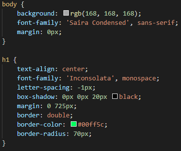
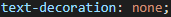

Aprendizado CSS
- O css é usado pra customizar a página, coloca-se os comandos e depois seus atributos entre as chaves { }
- Além de customizar comandos, pode customizar uma classe ou id, onde é preciso por o comando de classe explicado na pagina HTML em um comando. No caso do id, é mais utilizado após o inicio do javascript. (não pode utilizar espaço no nome de classes ou id's
- É possivel customizar a cor do plano de fundo da pagina, alterar o tamanho dos conteudos no html, fonte, adicionar caixas, sombras.
- Exemplo de CSS sendo usado:

- O comando de css "text-decoration" pode ser usado pra tirar o sublinhamento de links, utilizando o atributo "none", exemplo: 